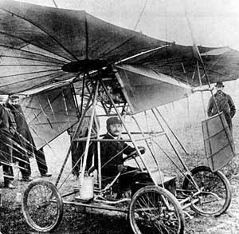

Date personale
Traian Vuia s-a născut în 1872 în satul Surducu Mic (parte a fostei comune Bujoru, astăzi Traian Vuia, județul Timiș) din (fostul comitat) Caraș-Severin, fost în Austro-Ungaria, în prezent în România. Părinții săi au fost preotul Simion Popescu și Ana Vuia; aceasta fiind cea de-a doua lui soție. A urmat cursurile primare la Bujor (azi Traian Vuia) și Făget. Între 1884 și 1892 a urmat Liceul Romano-Catolic din Lugoj.
Vuia dovedește de când urma cursurile primare, și apoi secundare, o atracție irezistibilă și o predilecție pentru mecanica aplicată și de fizică. La zece ani asistă la primele manifestări cu caracter aviatic, iar micul Vuia dezvoltă o pasiune pentru zmeie. El urmărește atent detaliile lor și încearcă să construiască altele mai perfecționate. Ajuns la liceu, Vuia își însușește noțiuni de fizică și mecanică și nu se mai mulțumește să construiască zmeie, ci încearcă să explice ce se petrece în jurul aparatului, forțele care acționează la lansarea și menținerea lui în aer, condițiile de echilibru, etc. Voia să înțeleagă zborul și, mai ales, voia să mânuiască zmeie, să le facă a se mișca în văzduh după propriul gând.

Avionul „Vuia I”
pe data 18 martie 1906
Problema zborului cu un aparat care cântărește mai mult decât aerul nu poate fi rezolvată și nu este decât un vis.
În ciuda acestor obstacole, Vuia nu renunță la proiect și se înscrie pentru un brevet, acordat pe 17 august 1903 și publicat pe 16 octombrie 1903. Invenția brevetată se numește aeroplan automobil.